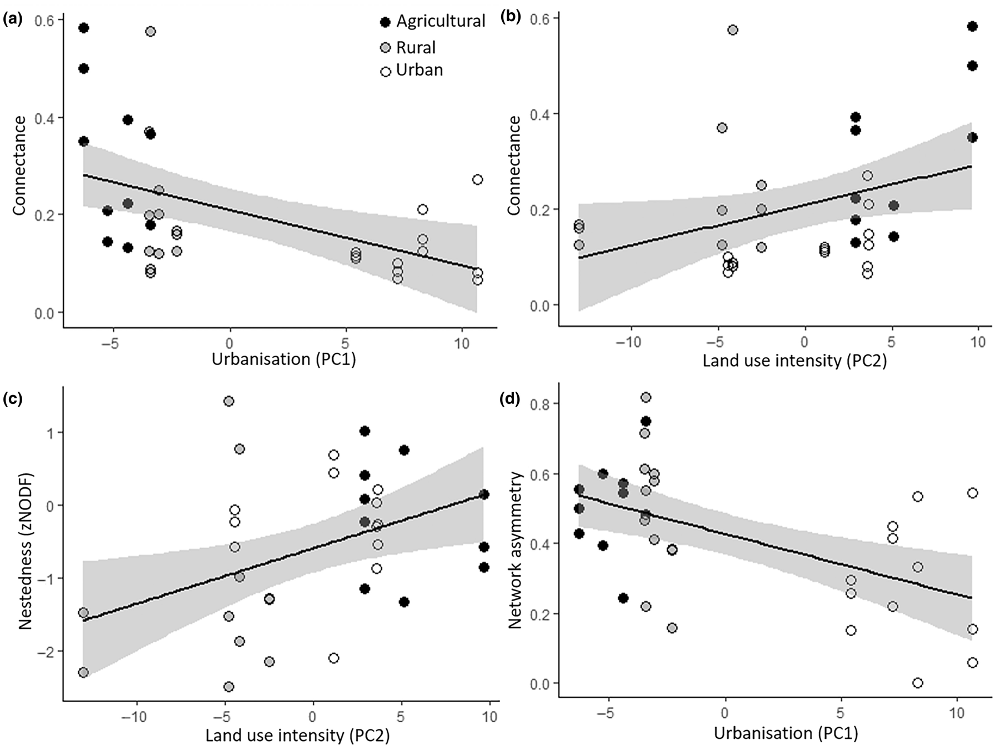
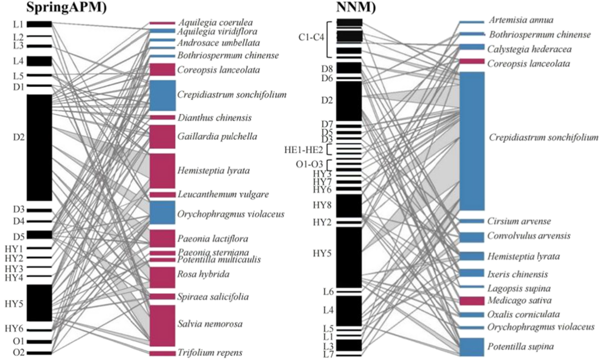

LAYER 01
物种多样性
植物与传粉者的种数、丰度
把 133 项独立研究的结论合到一起，总体趋势是清楚的：随着城市化程度加深，传粉者的丰富度和丰度都在下降。单个研究往往样本量不足；133 项合到一起，趋势才稳定下来。
不过不同类群给出的答案并不一致。蜜蜂、食蚜蝇、蝴蝶，各自沿着不同的方向变化。
另一组数据的方向相反：在非热带地区，城市植物的结籽率反而比乡村更高。
传粉者减少，传粉服务却没有同步下降。两者测量的并不是同一件事。
这 133 项研究覆盖了不同的纬度、不同的城市规模，以及多个传粉者类群， 所以合出来的趋势，比任何一项单独的研究都更稳。
二分网络把两个类群放进同一张图：左边是植物，右边是传粉者，一条连线代表一次访花记录。
网络的疏密用连接度衡量：实际出现的连线数，除以理论上可能出现的连线数。
研究在12 个景观单元中展开，覆盖农村、郊区、城市三类景观，每处采样三个季节。 全研究累计记录到 175 种植物和 281 种传粉者。
系数来自统计模型，反映变化的方向和相对大小，不能直接当作百分比读。 传粉者丰富度的系数为正，但没有跨过 0.05 这个门槛。

人工规划的区域开花植物更多，外来植物的占比也更高。
近自然管理的区域则呈现出另一种状态：传粉者种类更丰富，专化程度、嵌套性、连接度和稳健性都更高。
需要注意，两组绿地之间的差异不止植物来源一项，资源配置和微生境同时发生了变化。把结果单独归给乡土植物或外来植物，都缺少足够的支撑。

以上建议来自文献中的机制与相关性证据。不同城市的基质条件、气候背景和现有群落差异很大， 落到具体方案之前，仍然需要在本地做一轮实测来确认效果。
以上文献均按作者、年份、标题、期刊、卷期页码、DOI 的统一格式列出。课堂上展示的两幅 文献图件保留原图注与出处；自制图件仅用于说明概念，其中的节点与连线为示意数据。 文献中未能从摘要核实的数值，正文中未引用。